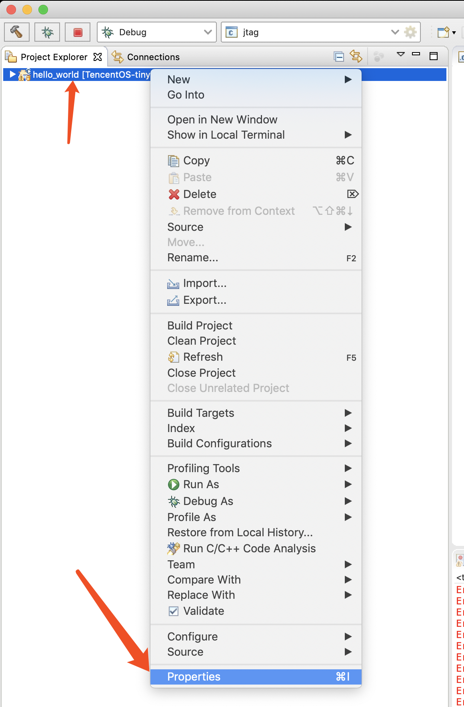
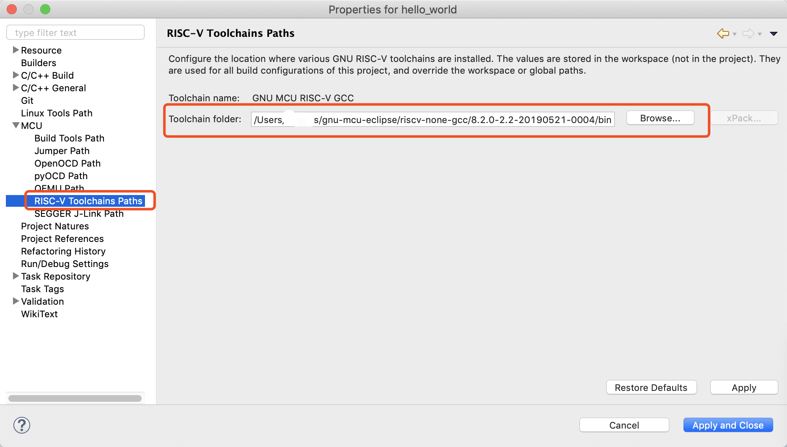
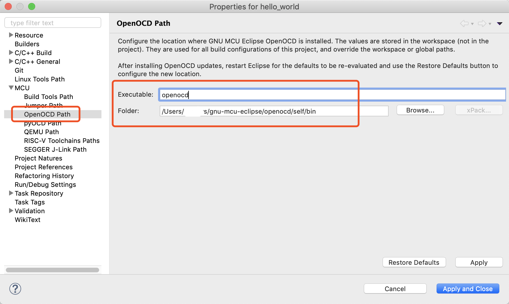
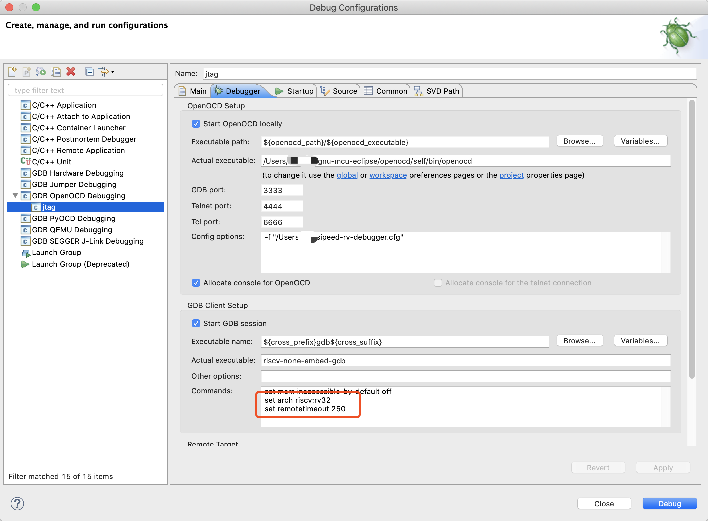

RISC-V eclipse 开发环境搭建
软件列表
- eclipse
- riscv toolchain
- riscv openocd
eclipse
下载安装过程略
riscv toolchain
在下载页https://github.com/gnu-mcu-eclipse/riscv-none-gcc/releases选择相应平台下载。并解压，放到合适的目录。
riscv openocd
签出代码git clone https://github.com/riscv-mcu/riscv-openocd
编译
./configure --enable-cmsis-dap --enable-ftdi --prefix=安装目录路径
make
make install
配置eclipse

配置toolchain路径

配置openocd路径

调试设置
添加如下两行
set arch riscv:rv32
set remotetimeout 250

如果用gd-link调试
配置文件
adapter_khz 1000
reset_config srst_only
adapter_nsrst_assert_width 100
interface cmsis-dap
transport select jtag
#autoexit true
set _CHIPNAME riscv
jtag newtap $_CHIPNAME cpu -irlen 5 -expected-id 0x1000563d
set _TARGETNAME $_CHIPNAME.cpu
target create $_TARGETNAME riscv -chain-position $_TARGETNAME
$_TARGETNAME configure -work-area-phys 0x20000000 -work-area-size 20480 -work-area-backup 0
# Work-area is a space in RAM used for flash programming
if { [info exists WORKAREASIZE] } {
set _WORKAREASIZE $WORKAREASIZE
} else {
set _WORKAREASIZE 0x5000
}
# Allow overriding the Flash bank size
if { [info exists FLASH_SIZE] } {
set _FLASH_SIZE $FLASH_SIZE
} else {
# autodetect size
set _FLASH_SIZE 0
}
# flash size will be probed
set _FLASHNAME $_CHIPNAME.flash
flash bank $_FLASHNAME gd32vf103 0x08000000 0 0 0 $_TARGETNAME
riscv set_reset_timeout_sec 1
init
halt
如果用sipeed riscv debugger调试
配置文件
adapter_khz 1000
interface ftdi
ftdi_device_desc "Dual RS232"
ftdi_vid_pid 0x0403 0x6010
transport select jtag
ftdi_layout_init 0x0008 0x001b
ftdi_layout_signal nSRST -oe 0x0020 -data 0x0020
set _CHIPNAME riscv
jtag newtap $_CHIPNAME cpu -irlen 5 -expected-id 0x1e200a6d
set _TARGETNAME $_CHIPNAME.cpu
target create $_TARGETNAME riscv -chain-position $_TARGETNAME
$_TARGETNAME configure -work-area-phys 0x20000000 -work-area-size 10000 -work-area-backup 1
set _FLASHNAME $_CHIPNAME.flash
flash bank $_FLASHNAME gd32vf103 0x08000000 0 0 0 $_TARGETNAME
riscv expose_csrs 3040-3071
init
halt
# We must turn on this because otherwise the IDE version debug cannot download the program into flash
#flash protect 0 0 last off